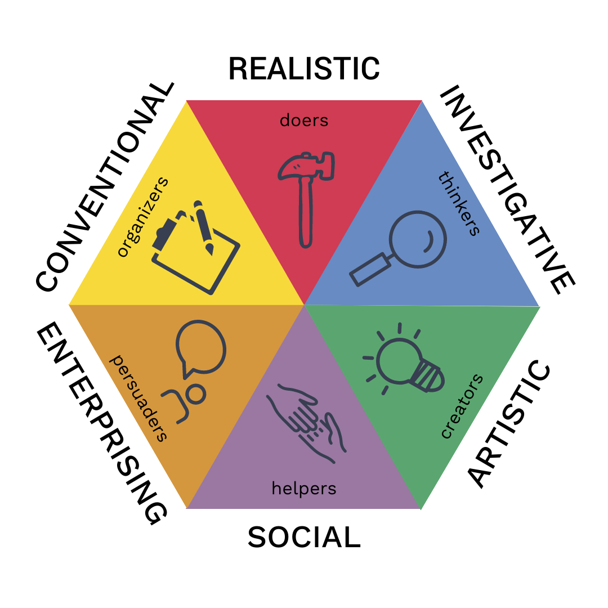

In what follows you will perform a set of tasks on a new dataset, the RIASEC data. This dataset 1 is placed in the folder called Data. To be short, the data contains answers of a large set of respondents from different countries on their interests according to a the RIASEC model (see Figure 1):
1 In the same folder you can find the file called codebook_RIASEC.txt where more info on the dataset can be found.

Figure 1: The RIASEC model
Instructions
You will find empty code blocks to write the necessary code in R.
You can run the code blocks to see whether you succeeded.
If it works: great!
If not, have a look at the solution (as a .qmd file or the .html file): Exercises_dplyr_solution.qmd or Exercises_dplyr_solution.html !
Time for some action!
Import the data
Of course, a first step is importing the dataset.
Create a project for the Exercises folder if you haven’t yet.
The dataset is an excel file called: RIASEC.xlsx.
Insert the necessary code to import the dataset and create a tibble for that dataset.
💡 Don’t forget to load the necessary packages…
library(tidyverse)
── Attaching core tidyverse packages ──────────────────────── tidyverse 2.0.0 ──
✔ dplyr 1.1.4 ✔ readr 2.1.4
✔ forcats 1.0.0 ✔ stringr 1.5.1
✔ ggplot2 3.5.1 ✔ tibble 3.2.1
✔ lubridate 1.9.3 ✔ tidyr 1.3.1
✔ purrr 1.0.2
── Conflicts ────────────────────────────────────────── tidyverse_conflicts() ──
✖ dplyr::filter() masks stats::filter()
✖ dplyr::lag() masks stats::lag()
ℹ Use the conflicted package (<http://conflicted.r-lib.org/>) to force all conflicts to become errors
library(here)
here() starts at /Users/demaeyer/Documents/Praatjes/Workshops/R Course ICO 2024/Exercises
Create a tibble with only the data for Belgian respondents. The specific country code for Belgium is “BE” (for the variable country). Name this tibble RIASEC_BE. As a check you can have a view in the Environment where you should see this extra dataset. The number of observations should equal 416.
RIASEC_BE <- RIASEC %>%filter( country =="BE" )
1.2
Continue with RIASEC_BE and select only the following variables:
age
gender
education
urban
familysize
Realistic
Investigative
Artistic
Social
Enterprising
Conventional
Overwrite the RIASEC_BE tibble with this reduced tibble.
💡 IF you make an error then you have to go back to 1.1 to create the full RIASEC_BE tibble again before you can execute 1.2
Have a look again to the Environment. You should see that RIASEC_BE only contains 11 variables.
1.3
You could also integrate both steps (1.1 and 1.2) in a single codeblock. Create code to go from the RIASEC tibble to the RIASEC_BE with only observations from Belgian respondents for the 11 variables 11 from 1.2 in one chain of code.
We continue with RIASEC_BE and we will calculate the average and the standard deviation for both men and women on the 6 scales of the RIASEC model (Realistic, Investigative, Artistic, Social, Enterprising, Conventional).
2.1
Before we start, we will make a new variable called Gender2 in theRIASEC_BE tibble where we only keep 3 codes: male, female en other.
💡 When recoding the variable gender it is good to know that code 1 was given for men, code 2 for women and code 3 for other identities
Time to calculate the averages for each of the three categories of the variable Gender2. Do this for each of the 6 variables of the RIASEC model. Before we can do this we have to filter out the observations with score 0 for the variable gender. Let the averages be printed in this report.
💡 It’s your task to come up with a new name for the variable that contains the averages. It is always wise to come up with meaningful names (e.g., Realistic_aver). Don’t forget you can make use of themean() function to calculate averages.
If the previous code runs ok, then you will notice that the output is a tibble as well. Click on Render and you will see that the result in the .html file doesn’t show all the averages. This is rather annoying if you want to have a table showing all the averages in your report.
Luckily we have a solution. We can make use of the package kableExtra. In the next code block do the following:
install the package kableExtra (or use the menu in the tab Packages)
laad the package kableExtra making use of the library() function
copy your code from 2.2 to calculate the averages
typ at the end %>% kable()
let’s click on Render again and compare the output with the output of 2.2
# install.packages(kableExtra)library(kableExtra)
Attaching package: 'kableExtra'
The following object is masked from 'package:dplyr':
group_rows
Now we can do the same to calculate standard deviations for each of the categories of Gender2. So bring on your copy-paste skills. The function in R to calculate a standard deviation is sd().